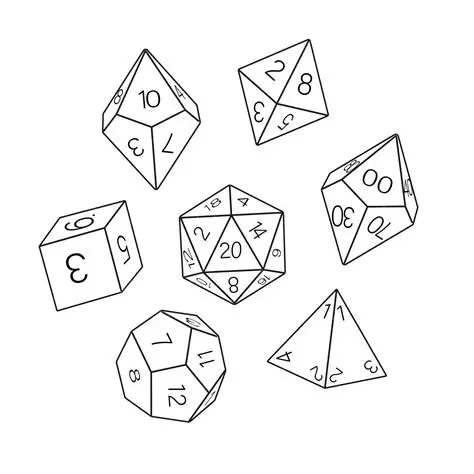

O Sistema de Profecia 2000 é um sistema de RPG de mesa criado por um grupo de amigos, que pode ser encontrado dentro do servidor do Discord "Dados Temperados". O objetivo desse sistema é permitir que o mestre, junto de seus players, possa explorar diferentes estilos de história por meio de habilidades criadas a partir da imaginação.
